Change analysis for Brunei Darussalam for PRIMAP-hist v2.6.1_final
compared to v2.6_final
Overview over
emissions by sector and gas
The following figures show the aggregate national total emissions
excluding LULUCF AR6GWP100 for the country reported priority scenario.
The dotted linesshow the v2.6_final data.
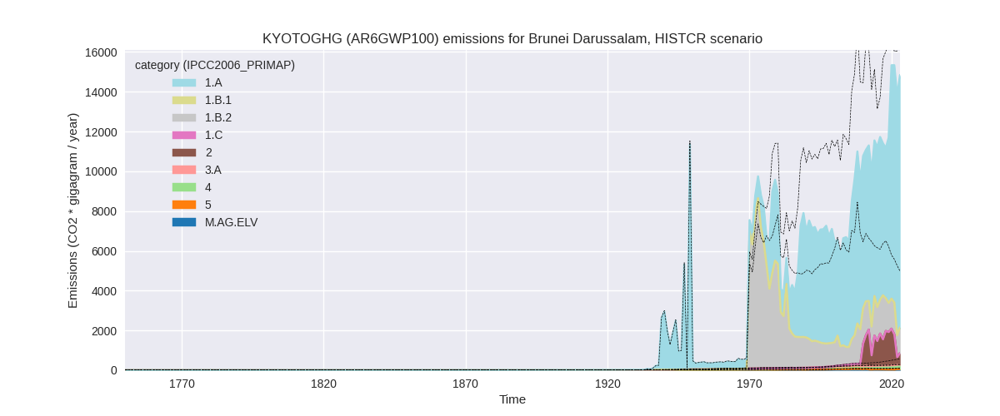
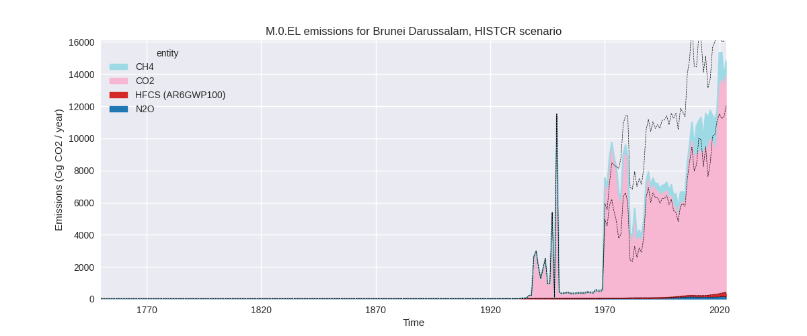
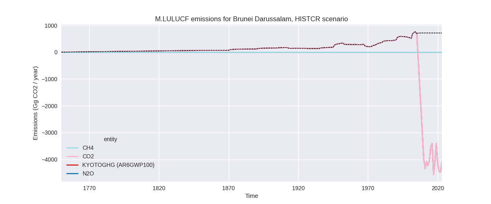
The following figures show the aggregate national total emissions
excluding LULUCF AR6GWP100 for the third party priority scenario. The
dotted linesshow the v2.6_final data.
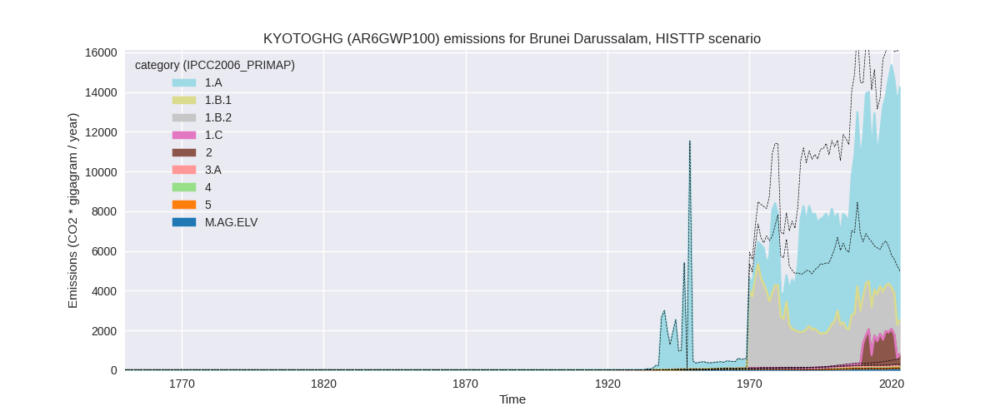
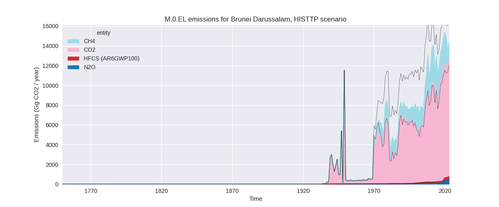
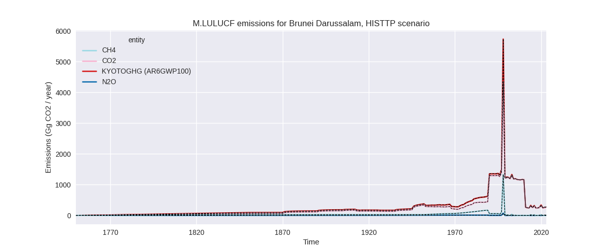
Overview over changes
In the country reported priority scenario we have the following
changes for aggregate Kyoto GHG and national total emissions excluding
LULUCF (M.0.EL):
- Emissions in 2023 have changed by -9.4%% (-1544.62 Gg CO2 / year)
- Emissions in 1990-2023 have changed by -29.8%% (-3988.78 Gg CO2 / year)
In the third party priority scenario we have the following changes
for aggregate Kyoto GHG and national total emissions excluding LULUCF
(M.0.EL):
- Emissions in 2023 have changed by -12.9%% (-2109.35 Gg CO2 / year)
- Emissions in 1990-2023 have changed by -22.5%% (-3009.63 Gg CO2 / year)
Most
important changes per scenario and time frame
In the country reported priority scenario the
following sector-gas combinations have the highest absolute impact on
national total KyotoGHG (AR6GWP100) emissions in 2023
(top 5):
- 1: 1.B.2, CH4 with -3629.60 Gg CO2 / year (-87.4%)
- 2: 1.A, CO2 with 1285.92 Gg CO2 / year (11.3%)
- 3: 1.B.2, CO2 with 507.47 Gg CO2 / year (197.0%)
- 4: 2, CH4 with 163.94 Gg CO2 / year (inf%)
- 5: 2, CO2 with 148.73 Gg CO2 / year (13761.9%)
In the country reported priority scenario the
following sector-gas combinations have the highest absolute impact on
national total KyotoGHG (AR6GWP100) emissions in
1990-2023 (top 5):
- 1: 1.B.2, CH4 with -4755.77 Gg CO2 / year (-89.4%)
- 2: 1.B.2, CO2 with 484.30 Gg CO2 / year (129.2%)
- 3: 2, CH4 with 369.59 Gg CO2 / year (inf%)
- 4: 1.A, CO2 with -163.55 Gg CO2 / year (-2.2%)
- 5: 2, CO2 with 103.55 Gg CO2 / year (1852.2%)
In the third party priority scenario the following
sector-gas combinations have the highest absolute impact on national
total KyotoGHG (AR6GWP100) emissions in 2023 (top
5):
- 1: 1.B.2, CH4 with -2706.96 Gg CO2 / year (-65.2%)
- 2: 1.A, N2O with 346.10 Gg CO2 / year (1225.0%)
- 3: 2, CH4 with 163.94 Gg CO2 / year (inf%)
- 4: 2, CO2 with 151.57 Gg CO2 / year (14024.3%)
- 5: 4, CH4 with -50.22 Gg CO2 / year (-32.4%)
In the third party priority scenario the following
sector-gas combinations have the highest absolute impact on national
total KyotoGHG (AR6GWP100) emissions in 1990-2023 (top
5):
- 1: 1.B.2, CH4 with -3517.87 Gg CO2 / year (-66.1%)
- 2: 2, CH4 with 369.59 Gg CO2 / year (inf%)
- 3: 2, CO2 with 109.18 Gg CO2 / year (1952.9%)
- 4: 1.A, N2O with 41.36 Gg CO2 / year (275.5%)
- 5: 4, CH4 with -40.45 Gg CO2 / year (-34.1%)
Notes on data changes
Here we list notes explaining important emissions changes for the
country.
- CRT data covering 2010-2022 has been added. It is the first country
reported data source with sufficient coverage. Thus the CR scenario
differs from the old version in most sectors and gases.
- The TP scenario has high changes for several sectors as well because
of changes in EDGAR data most importantly for fugitive CH4 from oil and
gas (1.B.2).
- The TP time series is also impacted by the CRT data e.g. for CO2 in
2.B because no third party data exists for this sector and gas.
Changes by sector and gas
For each scenario and time frame the changes are displayed for all
individual sectors and all individual gases. In the sector plot we use
aggregate Kyoto GHGs in AR6GWP100. In the gas plot we usenational total
emissions without LULUCF.
country reported scenario
2023
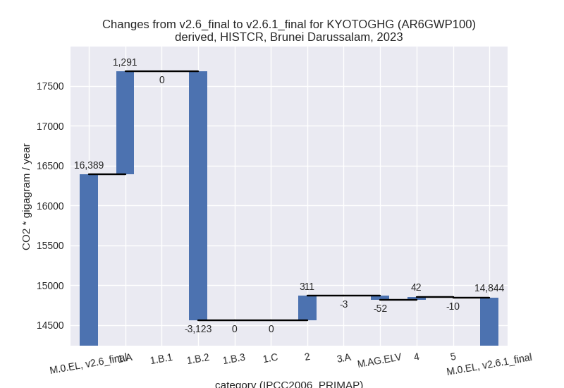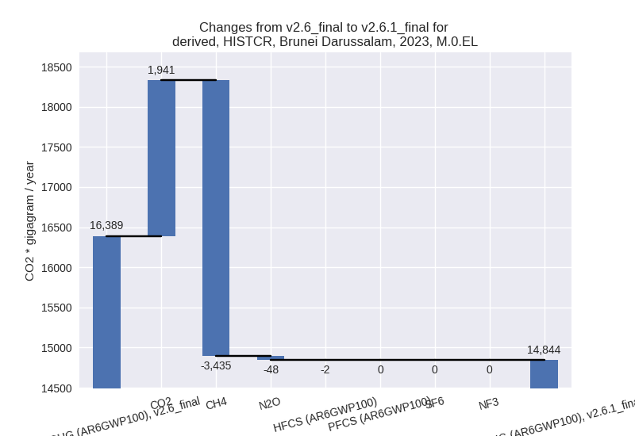
1990-2023
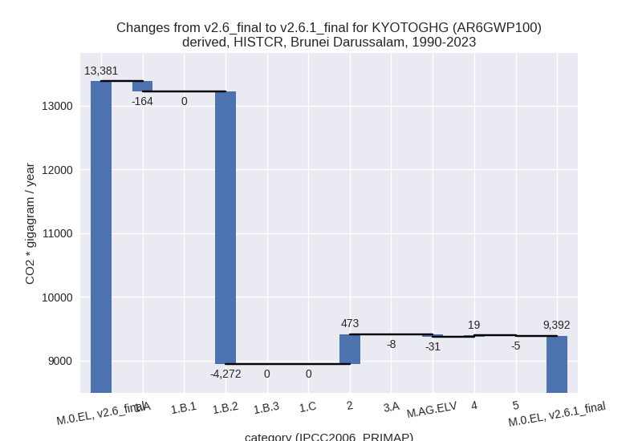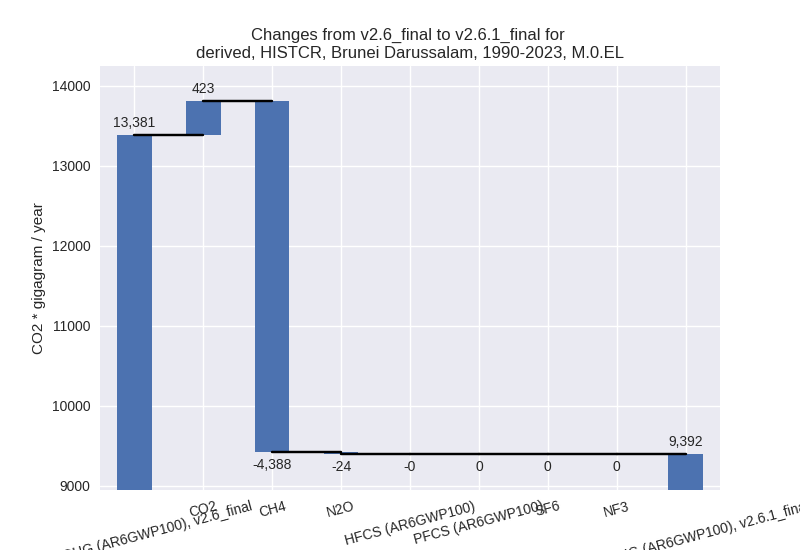
third party scenario
2023
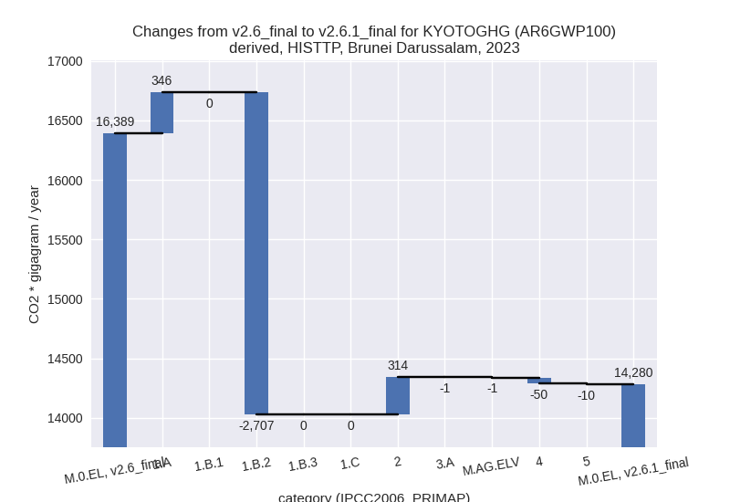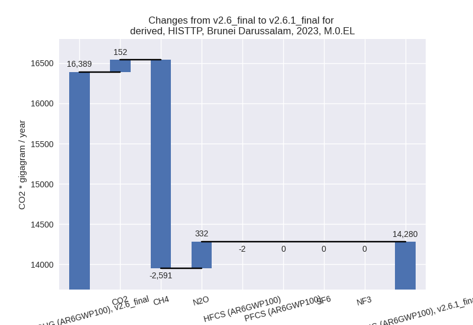
1990-2023
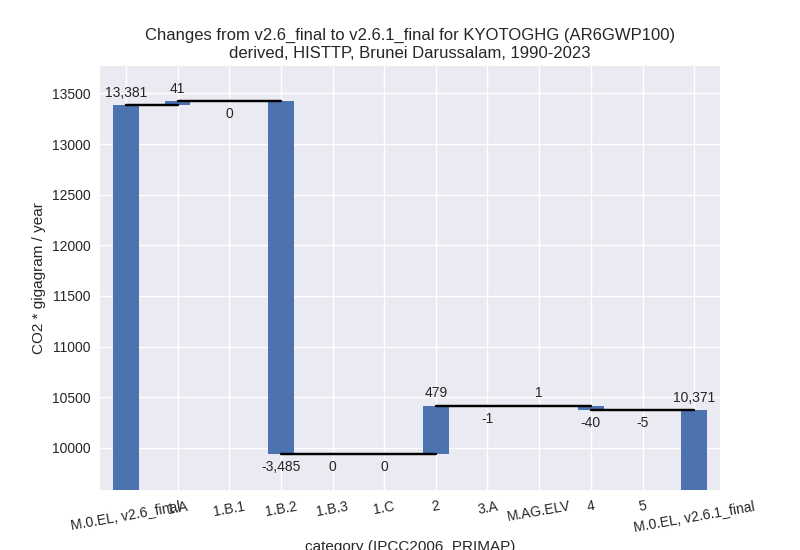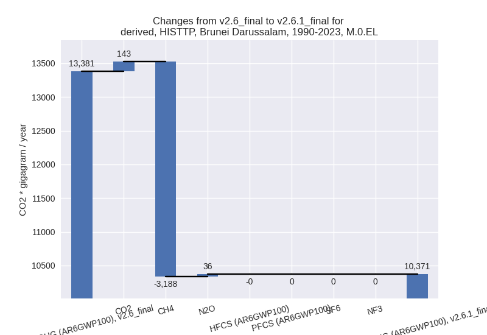
Detailed changes for the
scenarios:
country reported scenario
(HISTCR):
Most important changes
per time frame
For 2023 the following sector-gas combinations have
the highest absolute impact on national total KyotoGHG (AR6GWP100)
emissions in 2023 (top 5):
- 1: 1.B.2, CH4 with -3629.60 Gg CO2 / year (-87.4%)
- 2: 1.A, CO2 with 1285.92 Gg CO2 / year (11.3%)
- 3: 1.B.2, CO2 with 507.47 Gg CO2 / year (197.0%)
- 4: 2, CH4 with 163.94 Gg CO2 / year (inf%)
- 5: 2, CO2 with 148.73 Gg CO2 / year (13761.9%)
For 1990-2023 the following sector-gas combinations
have the highest absolute impact on national total KyotoGHG (AR6GWP100)
emissions in 1990-2023 (top 5):
- 1: 1.B.2, CH4 with -4755.77 Gg CO2 / year (-89.4%)
- 2: 1.B.2, CO2 with 484.30 Gg CO2 / year (129.2%)
- 3: 2, CH4 with 369.59 Gg CO2 / year (inf%)
- 4: 1.A, CO2 with -163.55 Gg CO2 / year (-2.2%)
- 5: 2, CO2 with 103.55 Gg CO2 / year (1852.2%)
Changes in the main sectors for aggregate KyotoGHG (AR6GWP100)
are
- 1: Total sectoral emissions in 2022 are 13123.36 Gg
CO2 / year which is 95.2% of M.0.EL emissions. 2023 Emissions have
changed by -11.6% (-1831.95 Gg CO2 /
year). 1990-2023 Emissions have changed by -34.0% (-4436.60 Gg CO2 / year). For 2023
the changes per gas
are:
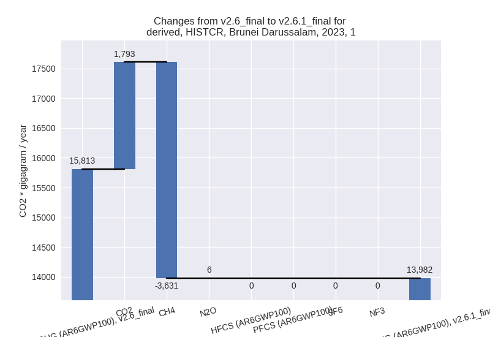
For 1990-2023 the changes per gas
are:
The changes come from the following subsectors:
- 1.A: Total sectoral emissions in 2022 are 12019.26
Gg CO2 / year which is 91.6% of category 1 emissions. 2023 Emissions
have changed by 11.3% (1290.67 Gg
CO2 / year). 1990-2023 Emissions have changed by -2.2% (-164.38 Gg CO2 / year). For 2023
the changes per gas
are:
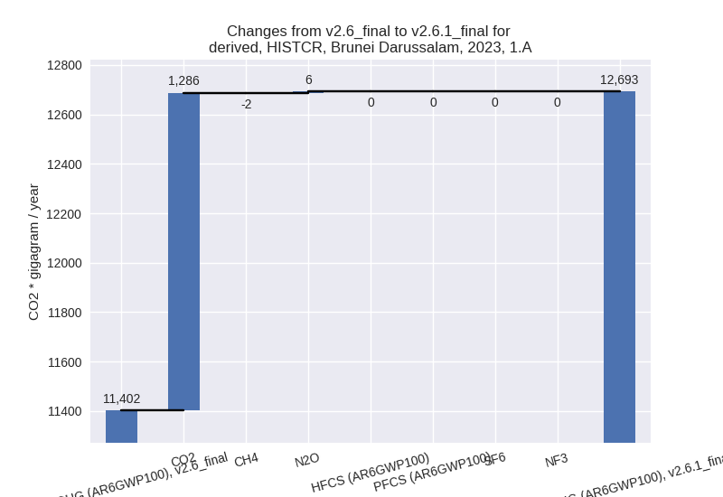
For 1990-2023 the changes per gas
are:
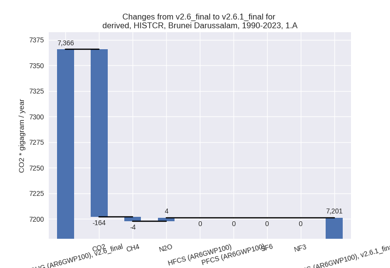
There is no subsector information available in PRIMAP-hist.
- 1.B.2: Total sectoral emissions in 2022 are 1104.09
Gg CO2 / year which is 8.4% of category 1 emissions. 2023 Emissions have
changed by -70.8% (-3122.62 Gg CO2 /
year). 1990-2023 Emissions have changed by -75.0% (-4272.22 Gg CO2 / year). For 2023
the changes per gas
are:
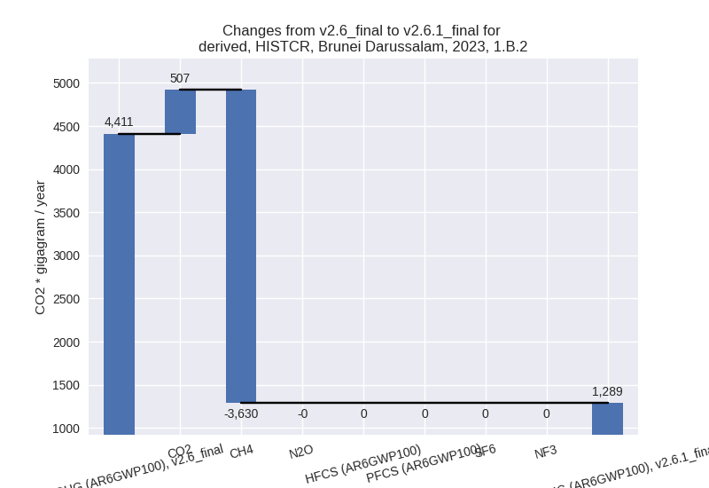
For 1990-2023 the changes per gas
are:
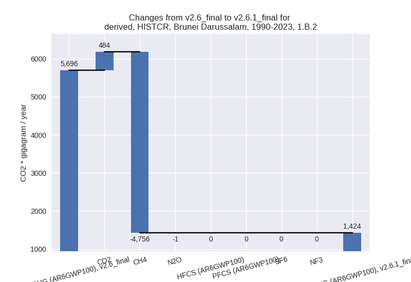
There is no subsector information available in PRIMAP-hist.
- 2: Total sectoral emissions in 2022 are 381.00 Gg
CO2 / year which is 2.8% of M.0.EL emissions. 2023 Emissions have
changed by 114.1% (310.69 Gg CO2 /
year). 1990-2023 Emissions have changed by 506.7% (473.00 Gg CO2 / year). For 2023
the changes per gas
are:
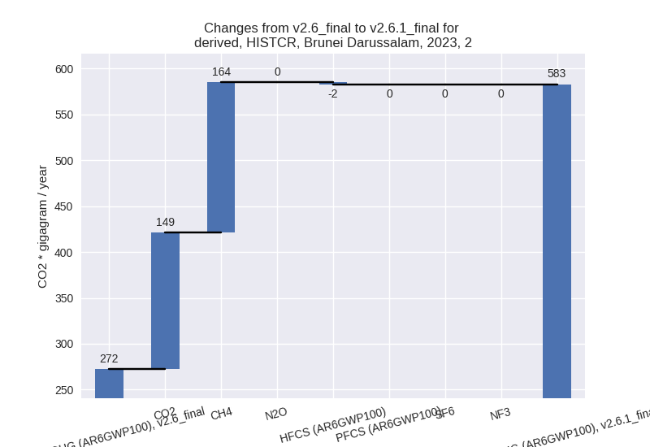
For 1990-2023 the changes per gas
are:
- M.AG: Total sectoral emissions in 2022 are 58.76 Gg
CO2 / year which is 0.4% of M.0.EL emissions. 2023 Emissions have
changed by -48.1% (-55.09 Gg CO2 /
year). 1990-2023 Emissions have changed by -49.3% (-39.26 Gg CO2 / year). For 2023
the changes per gas
are:
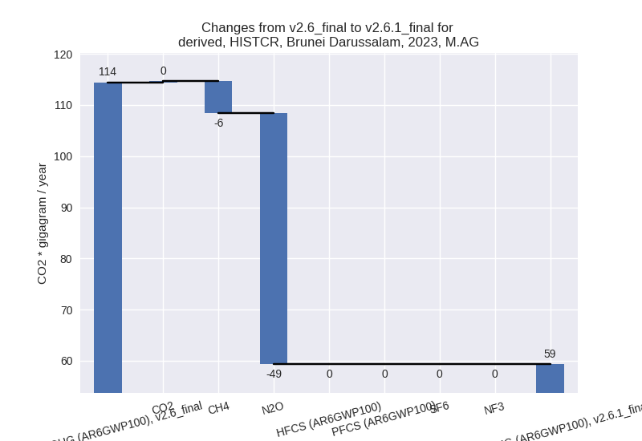
For 1990-2023 the changes per gas
are:
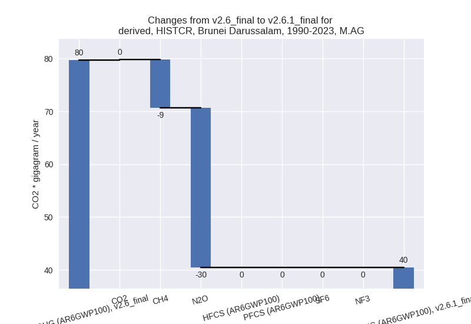
The changes come from the following subsectors:
- 3.A: Total sectoral emissions in 2022 are 23.73 Gg
CO2 / year which is 40.4% of category M.AG emissions. 2023 Emissions
have changed by -10.9% (-2.92 Gg CO2
/ year). 1990-2023 Emissions have changed by -36.4% (-8.23 Gg CO2 / year). For 2023 the
changes per gas
are:
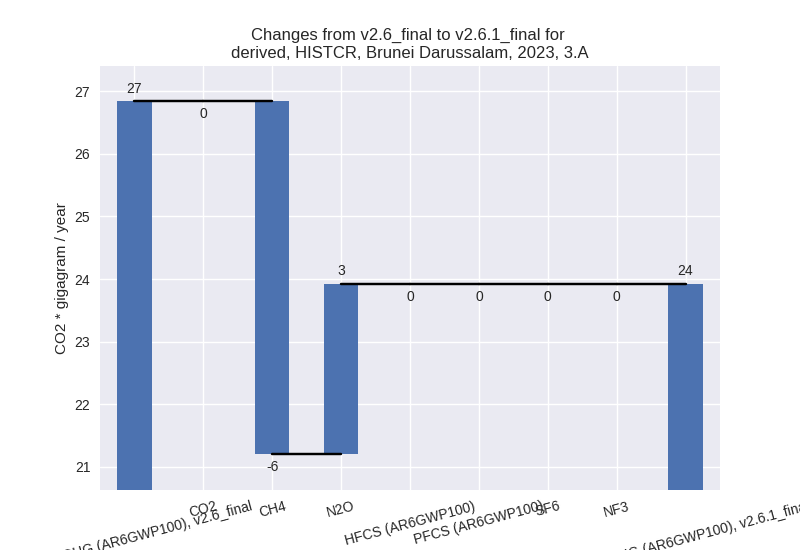
For 1990-2023 the changes per gas
are:
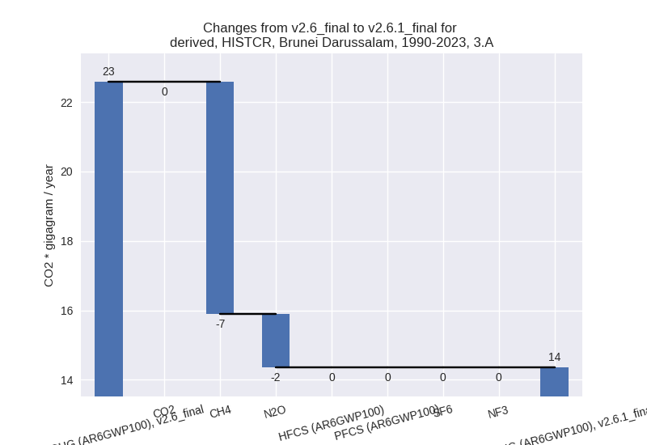
There is no subsector information available in PRIMAP-hist.
- M.AG.ELV: Total sectoral emissions in 2022 are
35.02 Gg CO2 / year which is 59.6% of category M.AG emissions. 2023
Emissions have changed by -59.6%
(-52.17 Gg CO2 / year). 1990-2023 Emissions have changed by -54.3% (-31.03 Gg CO2 / year). For 2023
the changes per gas
are:
For 1990-2023 the changes per gas
are:
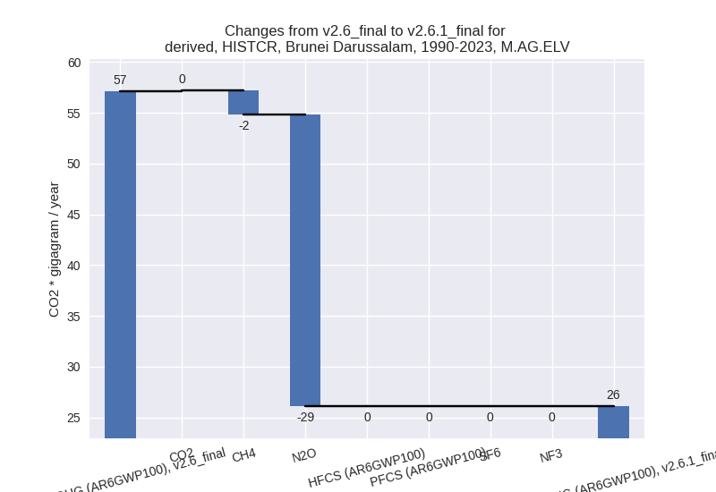
There is no subsector information available in PRIMAP-hist.
- 4: Total sectoral emissions in 2022 are 198.33 Gg
CO2 / year which is 1.4% of M.0.EL emissions. 2023 Emissions have
changed by 26.4% (42.02 Gg CO2 /
year). 1990-2023 Emissions have changed by 15.5% (19.25 Gg CO2 / year). For 2023 the
changes per gas
are:
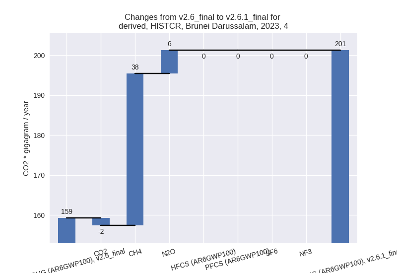
For 1990-2023 the changes per gas
are:
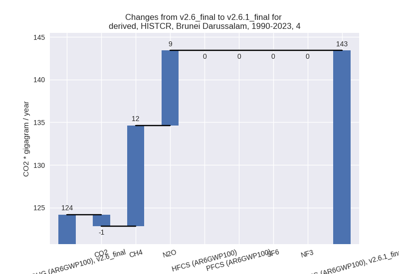
- 5: Total sectoral emissions in 2022 are 18.69 Gg
CO2 / year which is 0.1% of M.0.EL emissions. 2023 Emissions have
changed by -34.9% (-10.29 Gg CO2 /
year). 1990-2023 Emissions have changed by -23.4% (-5.18 Gg CO2 / year). For 2023 the
changes per gas
are:
For 1990-2023 the changes per gas
are:
third party scenario (HISTTP):
Most important changes
per time frame
For 2023 the following sector-gas combinations have
the highest absolute impact on national total KyotoGHG (AR6GWP100)
emissions in 2023 (top 5):
- 1: 1.B.2, CH4 with -2706.96 Gg CO2 / year (-65.2%)
- 2: 1.A, N2O with 346.10 Gg CO2 / year (1225.0%)
- 3: 2, CH4 with 163.94 Gg CO2 / year (inf%)
- 4: 2, CO2 with 151.57 Gg CO2 / year (14024.3%)
- 5: 4, CH4 with -50.22 Gg CO2 / year (-32.4%)
For 1990-2023 the following sector-gas combinations
have the highest absolute impact on national total KyotoGHG (AR6GWP100)
emissions in 1990-2023 (top 5):
- 1: 1.B.2, CH4 with -3517.87 Gg CO2 / year (-66.1%)
- 2: 2, CH4 with 369.59 Gg CO2 / year (inf%)
- 3: 2, CO2 with 109.18 Gg CO2 / year (1952.9%)
- 4: 1.A, N2O with 41.36 Gg CO2 / year (275.5%)
- 5: 4, CH4 with -40.45 Gg CO2 / year (-34.1%)
Changes in the main sectors for aggregate KyotoGHG (AR6GWP100)
are
- 1: Total sectoral emissions in 2022 are 12794.84 Gg
CO2 / year which is 95.4% of M.0.EL emissions. 2023 Emissions have
changed by -14.9% (-2361.02 Gg CO2 /
year). 1990-2023 Emissions have changed by -26.4% (-3443.46 Gg CO2 / year). For 2023
the changes per gas
are:
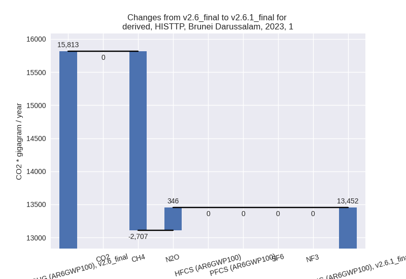
For 1990-2023 the changes per gas
are:
The changes come from the following subsectors:
- 1.A: Total sectoral emissions in 2022 are 11115.93
Gg CO2 / year which is 86.9% of category 1 emissions. 2023 Emissions
have changed by 3.0% (345.78 Gg CO2
/ year). 1990-2023 Emissions have changed by 0.6% (41.16 Gg CO2 / year). For 2023 the
changes per gas
are:
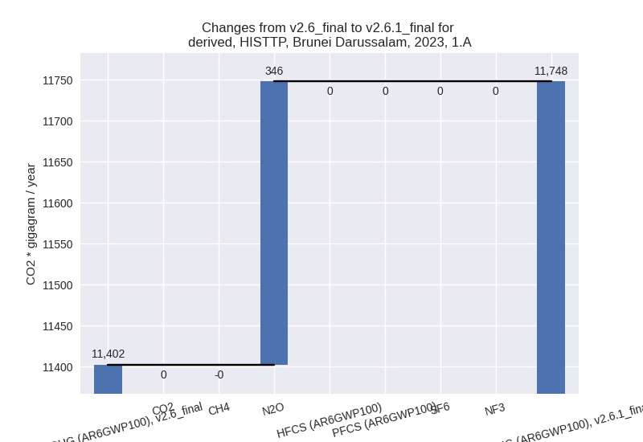
There is no subsector information available in PRIMAP-hist.
- 1.B.2: Total sectoral emissions in 2022 are 1678.91
Gg CO2 / year which is 13.1% of category 1 emissions. 2023 Emissions
have changed by -61.4% (-2706.80 Gg
CO2 / year). 1990-2023 Emissions have changed by -61.2% (-3484.62 Gg CO2 / year). For 2023
the changes per gas
are:
For 1990-2023 the changes per gas
are:
There is no subsector information available in PRIMAP-hist.
- 2: Total sectoral emissions in 2022 are 383.92 Gg
CO2 / year which is 2.9% of M.0.EL emissions. 2023 Emissions have
changed by 115.1% (313.53 Gg CO2 /
year). 1990-2023 Emissions have changed by 512.8% (478.63 Gg CO2 / year). For 2023
the changes per gas
are:
For 1990-2023 the changes per gas
are:
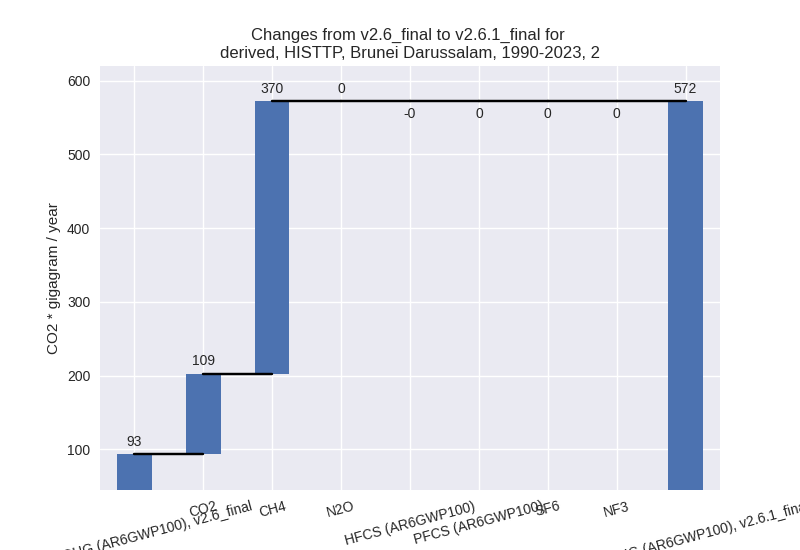
- M.AG: Total sectoral emissions in 2022 are 111.66
Gg CO2 / year which is 0.8% of M.0.EL emissions. 2023 Emissions have
changed by -1.5% (-1.70 Gg CO2 /
year). 1990-2023 Emissions have changed by 0.9% (0.75 Gg CO2 / year).
- 4: Total sectoral emissions in 2022 are 107.78 Gg
CO2 / year which is 0.8% of M.0.EL emissions. 2023 Emissions have
changed by -31.3% (-49.87 Gg CO2 /
year). 1990-2023 Emissions have changed by -32.5% (-40.38 Gg CO2 / year). For 2023
the changes per gas
are:
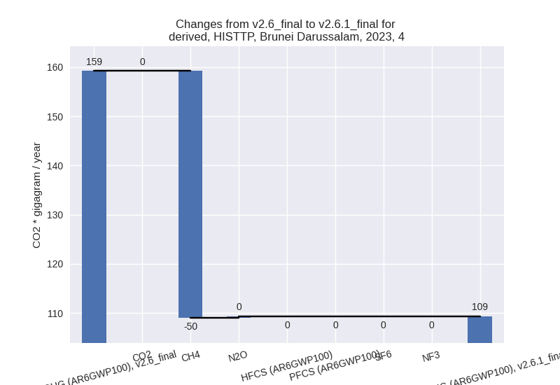
For 1990-2023 the changes per gas
are:
- 5: Total sectoral emissions in 2022 are 18.69 Gg
CO2 / year which is 0.1% of M.0.EL emissions. 2023 Emissions have
changed by -34.9% (-10.29 Gg CO2 /
year). 1990-2023 Emissions have changed by -23.4% (-5.18 Gg CO2 / year). For 2023 the
changes per gas
are:
For 1990-2023 the changes per gas
are:
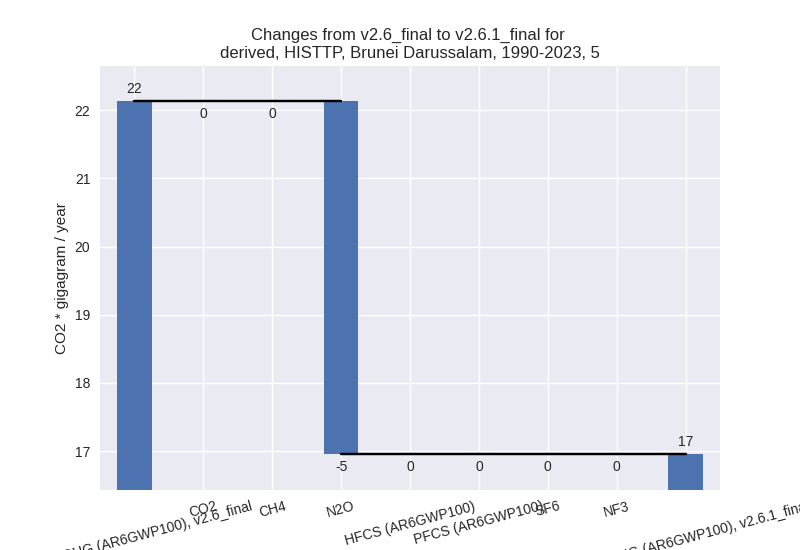